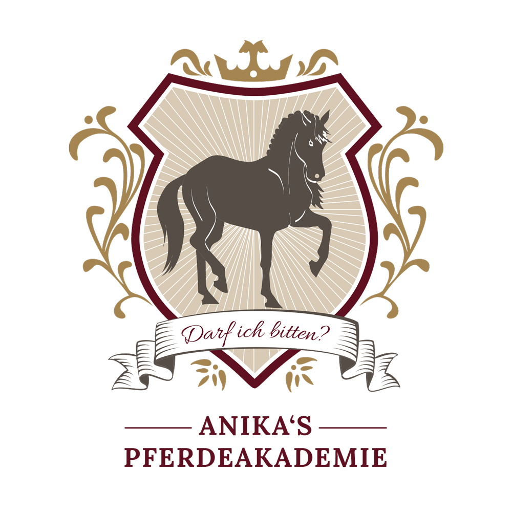

Schön, dass du da bist! In diesem Infopaket findest du alles, was zu deinem Unterricht dazugehört. So weißt du von Anfang an, was du nutzen kannst und wie wir Termine, Kündigung und Bezahlung organisieren.
Live per Videoanruf über Zoom oder WhatsApp, direkt bei dir im Stall. Mit festem Regeltermin, wöchentlich, alle zwei Wochen oder einmal im Monat.
Wenn du in der Nähe wohnst, kannst du jede Einheit auch bei mir vor Ort auf einem meiner Lehrpferde nutzen, zum gleichen Preis von 85 €.
Treffen wir uns per Zoom, zeichne ich die Stunde auf und du bekommst die Aufnahme. So kannst du in Ruhe nachschauen, was wir erarbeitet haben.
An Werktagen kannst du mir jederzeit Fragen stellen oder kurze Videoausschnitte schicken.
Einmal im Monat treffen wir uns mit meinen Online-Schülerinnen in Zoom. Du kannst Fragen stellen oder Trainingsvideos einreichen, die wir gemeinsam analysieren. Dazu hast du Zugriff auf alle Aufzeichnungen der letzten zwei Jahre.
Das bekommst du direkt zum Start.
Damit halten wir zu Beginn fest, wo du mit deinem Pferd hinmöchtest. Für die nächsten 8 Wochen legst du ein Minimal- und ein Maximalziel fest. Du findest ihn ab Seite 4.
Bei meinen Kooperationspartnern sparst du beim Einkauf. Die Codes findest du auf Seite 3.
Mit deiner Anmeldung reserviere ich dir einen meiner wenigen Unterrichtsplätze. Wenn du ihn nicht mehr brauchst, kannst du ihn jeden Monat zum Monatsende kündigen.
Zu Beginn sprechen wir ab, in welchem Rhythmus wir trainieren, zum Beispiel wöchentlich, alle zwei Wochen oder einmal im Monat. Dazu vereinbaren wir einen festen Regeltermin, am besten unter der Woche tagsüber. Ausweichtermine können nach Absprache auch abends oder am Wochenende stattfinden.
Du entscheidest, wie wir uns treffen:
In beiden Fällen stellst du dein Handy im Querformat so in eine Ecke, dass ich dich und dein Pferd gut sehe, zum Beispiel auf dem Zirkel. Über dein Headset hörst du mich die ganze Zeit. Du brauchst nur dein Handy, ein Headset und eine stabile Internetverbindung. Ein Pivo, der dir automatisch folgt, ist schön, aber kein Muss.
Plane für eine Einheit bis zu 45 Minuten ein. Dein Pferd sollte zum Start geputzt und startbereit sein und dein Handy aufgeladen, damit wir die Zeit voll fürs Training nutzen können.
Sag mir bitte so früh wie möglich per WhatsApp an 0172 4510344 Bescheid.
Wenn du länger weg bist, sprechen wir uns ab. Dann kannst du pausieren oder die Termine nachholen.
Erwachsene entscheiden selbst, ob sie mit Helm reiten. Für alle unter 18 Jahren gilt Helmpflicht.
Zubehör aus Biothane wie Kappzäume, Zügel und vieles mehr.
Mit dem Code Anikas Pferdeakademie sparst du 10 %.
tajara-horsewear.de
Pferdefutter und Mineralfutter.
Mit dem Code AnikaW sparst du 5 %.
horse-vitality-company.com/?ref=AnikaW
Nimm dir vor unserer ersten Stunde ein paar Minuten Zeit dafür. Es gibt keine falschen Antworten. Je ehrlicher du schreibst, desto besser kann ich den Unterricht auf euch abstimmen.
Wir schauen immer auf die nächsten 8 Wochen. Dafür legst du zwei Ziele fest. Dein Minimalziel ist das, was du in dieser Zeit auf jeden Fall schaffen möchtest, auch wenn mal etwas dazwischenkommt. Dein Maximalziel ist das, was drin ist, wenn alles richtig gut läuft. Formuliere beide so konkret, dass wir nach 8 Wochen klar sagen können, ob du es erreicht hast.
Das möchtest du in den nächsten 8 Wochen auf jeden Fall erreichen.
Das ist in den nächsten 8 Wochen drin, wenn alles richtig gut läuft.
Ich kann meine Einwilligung jederzeit ganz oder teilweise widerrufen, formlos per WhatsApp oder E-Mail. Was bis dahin veröffentlicht wurde, bleibt rechtmäßig. Auf Wunsch entfernt Anika die Beiträge, soweit ihr das möglich ist.
Bei Minderjährigen zusätzlich Unterschrift der Erziehungsberechtigten: